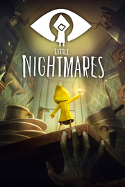

Little Nightmares
Detalles
|  | |
| Tiempo de juego | No Jugado |
| Última actividad | Nunca |
| Añadido | 11/6/2024 15:27:55 |
| Modificado | 11/17/2024 14:32:33 |
| Estado de finalización | No Jugado |
| Librería | Playnite |
| Fuente | 1 TB 1 |
| Plataforma | PC (Windows) |
| Fecha de lanzamiento | |
| Puntuación de la Comunidad | 93 |
| Puntuación de la Crítica | 81 |
| Puntuación de usuario | |
| Género | Aventura |
| Desarrollador | Tarsier Studios |
| Editor | Bandai Namco Entertainment |
| Característica | Cloud Saves Compat. Total Con Mando Cromos De Logros De Préstamo Familiar Remote Play En TV Un Jugador |
| Enlaces | Punto de encuentro Discusiones Guías Noticias Página de la tienda PCGamingWiki Logros |
| Tag | 2.5D Acción Ambientales Aventura Buena trama Corto Estrategia Gran banda sonora Indie Oscuros Plataformas Plataformas de puzles Protagonista femenina Puzles Sigilo Supervivencia / Terror Tercera persona Terror Terror psicológico Un jugador |
Descripción
La serie Little Nightmares ha cautivado a millones de jugadores de todo el mundo desde 2017. Ahora te toca a ti intentar sobrevivir a la primera entrega de la franquicia de terror más encantadora.
Ponte en la piel de Six, una niña solitaria y perdida en un navío metálico enorme conocido como las Fauces, rodeado de versiones distorsionadas y peligrosas de adultos. Tendrás que hacer todo lo posible por escapar de una pieza, si no quieres que tu destino sea peor de lo que nunca imaginaste.
OBSERVA TU ENTRORNO
Te despiertas en una sala húmeda y oscura con nada más que un mechero de latón. No recuerdas cómo has llegado aquí, pero está claro que corres peligro. Solo sobrevivirás gracias a tus ojos perspicaces y a tu rápido ingenio.

ENCUENTRA UNA VÍA DE ESCAPE
Este mundo no es adecuado para los niños, pero, con un poco de imaginación, puedes aprovechar tu estatura. Sube por cajones y estantes para encontrar pasadizos en las Fauces por los que solo cabría un niño, tan pequeños que los adultos no podrán alcanzarlos. Allí estarás a salvo..., al menos durante un tiempo.

EVITA A LOS RESIDENTES
Los habitantes de las Fauces solo tienen un uso para los niños, y no es bonito. Los niños que no quieren que los pillen han de permanecer ocultos y moverse con cuidado. En algunos casos, una distracción puede llamar su atención el tiempo suficiente para escapar sin un rasguño. Ten cuidado, si haces demasiado ruido, los residentes te localizarán... y no hay nada que los haga desistir.

CORRE Y SOBREVIVE
A veces no queda otra que correr. Si logras llegar allí donde los residentes no puedan alcanzarte, tal vez sobrevivas.

¿Conseguirás atravesar las Fauces para alcanzar la libertad? Six cuenta contigo. Buena suerte, peque.